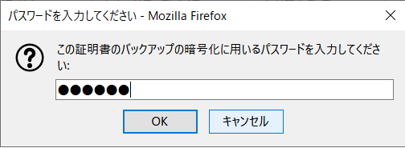
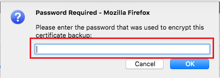
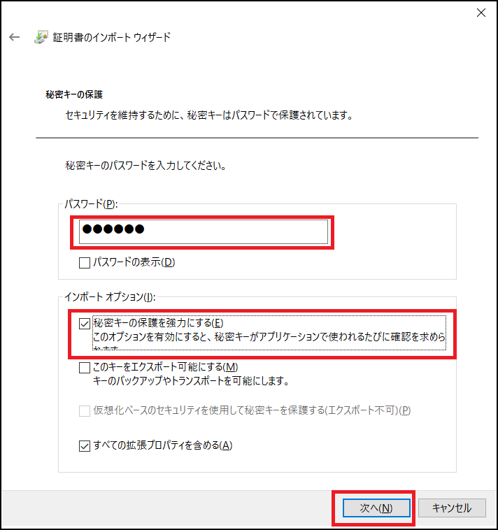

4.2. クライアント証明書のインストール¶
クライアント証明書は富岳ウェブサイトをアクセスする時に使用します。富岳ウェブサイトをアクセスするWebブラウザにインストールしてください。
「富岳」の富岳ウェブサイトにアクセスするために必要なクライアント証明書のインストール方法を示します。 「スタートアップガイド」を参照してクライアント証明書を既にインストールしている場合は本作業は不要です。
クライアント証明書をインストールする前に次の二つを用意してください。
クライアント証明書:"ユーザーアカウント名.p12"ファイル
クライアント証明書のパスフレーズ
- クライアント証明書
アカウント発行が完了すると申請時に記載したメールアドレス宛てにクライアント証明書が電子メールで送付されます。電子メールに添付されている"ローカルアカウント名.p12"ファイルを、クライアント証明書をインストールする機器（パソコンなど）に保存してください。 "ローカルアカウント名.p12"ファイルには、クライアントの秘密鍵、クライアント証明書（公開鍵）、クライアント証明書発行局のルート証明書が含まれています。
- クライアント証明書のパスフレーズ
パスフレーズは、クライアント証明書とは別に、書面またはPDFファイルで送付されます。 パスフレーズはクライアント証明書をインストールする時に必要となります。安全な場所に保管してください。
ここでは、富岳ウェブサイトの推奨Webブラウザにクライアント証明書を登録する手続きについて説明します。
注釈
指定のWebブラウザと異なるものを利用する場合は、自身でWebブラウザの証明書管理方法を確認し、利用するWebブラウザにクライアント証明書のインストールを行ってください。
4.2.1. Firefoxへの証明書のインストール（Windows）¶
Microsoft WindwsでFirefoxを利用する場合のインストール手順を示します。 Firefoxのバージョンによって画面に差異がある場合があります。 画面が異なる場合はFirefoxの情報を確認して作業を実施してください。
Firefoxを起動し、[オプション]の画面を開きます。 [プライバシーとセキュリティ]の[証明書を表示]をクリックします。
証明書マネージャが起動したら、[あなたの証明書]を選択して、[インポート...]をクリックします。
クライアント証明書:"ローカルアカウント名.p12"ファイルを選択し[開く]をクリックします。
クライアント証明書のパスフレーズを パスワード欄に入力し、[OK]をクリックします。
 注意
クライアント証明書のパスフレーズが正しくない場合エラーが表示され、次の画面に進めません。
クライアント証明書が登録されたことを確認してください。
[認証局証明書]を選択し表示される一覧から「RIKEN R-CCS」を選択して表示をクリックします。
証明書のFingerprintsが(SHA-1):
EEED846F FC733A73 328F4561 39BDB995 D5174BBCであることを確認してください。
続けて、クライアント証明書利用時に入力するパスワードを設定します。セキュリティデバイス...をクリックします。
デバイスマネージャが起動したら、Software Security Deviceを選択し、パスワードを変更...をクリックします。
クライアント証明書利用時に要求される任意のパスワードを設定し、OKをクリックします
パスワードの登録が完了したら、デバイスマネージャを閉じます。クライアント証明書利用時のパスワードの設定作業は以上です。ここで設定したパスワードはクライアント証明書を利用するときに使用します。
4.2.2. Firefoxへの証明書のインストール（Mac）¶
Firefoxを起動し、メニューから [環境設定...]をクリックします。
プライバシーとセキュリティタブの [証明書を表示...]をクリックします。

証明書マネージャが起動したら、[あなたの証明書]を選択して、[読み込む...]をクリックします。
パソコンに保存した"ローカルアカウント名.p12"ファイルを選択し、[開く]をクリックします。

入手したクライアント証明書のパスフレーズを パスワード欄に入力し、[OK]をクリックします。
 注意
クライアント証明書のパスフレーズが正しくない場合エラーが表示され、次の画面に進めません。
クライアント証明書が登録されたことを確認し、[OK]をクリックして証明書マネージャを終了します。以上で、クライアント証明書のインストール作業は完了です。

続けて、クライアント証明書利用時に入力するパスワードを設定します。セキュリティデバイス...をクリックします。
デバイスマネージャが起動したら、Software Security Deviceを選択し、パスワードを変更...をクリックします。

クライアント証明書利用時に要求される任意のパスワードを設定し、OKをクリックします

OKをクリックします。
OKをクリックして、デバイスマネージャを閉じます。クライアント証明書利用時のパスワードの設定作業は以上です。
4.2.3. Chromeへの証明書のインストール（Windows）¶
Microsoft WindwsでChromeを利用する場合のインストール手順を示します。 Chromeのバージョンによって画面に差異がある場合があります。 画面が異なる場合はChromeの情報を確認して作業を実施してください。
Chromeを起動し、[設定]の画面を開きます。 [プライバシーとセキュリティ]の[セキュリティ]をクリックします。
[証明書の管理]をクリックします。
[Windowsからインポートした証明書を管理する]をクリックします。
証明書マネージャが起動したら、[個人]を選択して、[インポート...]をクリックします。
証明書のインポートウイザードが開いたら[次へ]をクリックします。
[参照]をクリックします。
ファイルの種類を[Personal Information Exchange(*.pfx,*.p12)]に変更します。
"ユーザーアカウント名.p12"ファイルを選択し、[開く]をクリックします。
ファイル名を設定した後、[次へ]をクリックします。
クライアント証明書のパスフレーズをパスワード欄に入力し、インポートオプションの[秘密キーの保護を強力にするにチェックを付け、[次へ]をクリックします。
 注意
クライアント証明書のパスフレーズが正しくない場合エラーが表示され、次の画面に進めません。
証明書の種類に基づいて、自動的に証明書ストアを選択するをチェックし、[次へ]をクリックします。
[完了]をクリックします。
引き続き「新しい秘密交換キーをインポートします」画面が表示されますので、[セキュリティレベルの設定]をクリックします。

[高]をチェックし、[次へ]をクリックします。
パスワードを設定し、[完了]をクリックします。
[OK]をクリックします。
[OK]をクリックします。
セキュリティ警告が出た場合は、拇印が(SHA-1):
EEED846F FC733A73 328F4561 39BDB995 D5174BBCであることを確認したうえで、[はい]をクリックします。
以上でクライアント証明書のインストールは完了です。
4.2.4. Chromeへの証明書のインストール（Mac）¶
MacでChromeを利用する場合のインストール手順を示します。 macOSでは、クライアント証明書を「キーチェーンアクセス」で管理しています。
クライアント証明書:"ユーザーアカウント名.p12"ファイルをダブルクリックします。最初にパスワード入力画面が表示されます。 クライアント証明書のパスフレーズを入力し、[OK]をクリックします。

注意
クライアント証明書のパスフレーズが正しくない場合エラーが表示され、次の画面に進めません。
「キーチェーンアクセス」画面を開き、クライアント証明書を発行したサーバの証明書（RIKEN R-CCS）をダブルクリックします。
「ルート認証局」の「信頼」をクリックし、「この証明書を使用するとき：」のリストから「常に信頼する」を選択して、画面を閉じます。

{kind=link}
{kind=link}
{kind=link}
{kind=link}
{kind=link}
{kind=link}
{kind=link}
{kind=link}
{kind=link}
{kind=link}
{kind=link}
{kind=link}
{kind=link}
{kind=link}
{kind=link}
{kind=link}
{kind=link}
{kind=link}
{kind=link}
{kind=link}
{kind=link}
{kind=link}
{kind=link}
{kind=link}
{kind=link}
{kind=link}
{kind=link}
{kind=link}
{kind=link}
{kind=link}
{kind=link}
{kind=link}
{kind=link}
{kind=link}
{kind=link}
信頼設定の変更を反映するため、Macの管理者ユーザ名とパスワードが要求されます。これらを入力し、［設定をアップデート］をクリックします。
{kind=link}
「キーチェーンアクセス」画面で、Controlキーを押しながらクライアント証明書（名前欄にローカルアカウント名が表記されたもの）をクリックし、「新規識別プリファレンス」を選択します。
{kind=link}
「場所またはメールアドレス：」に「https://www.fugaku.r-ccs.riken.jp/」と入力し、[追加]をクリックします。
{kind=link}
同様の手順で「https://api.fugaku.r-ccs.riken.jp/」を登録します。
{kind=link}
「キーチェーンアクセス」に入力した「https://www.fugaku.r-ccs.riken.jp/」「https://api.fugaku.r-ccs.riken.jp/」の「識別プリファレンス」が追加されたことを確認し、画面を閉じます。インストール作業はこれで完了です。